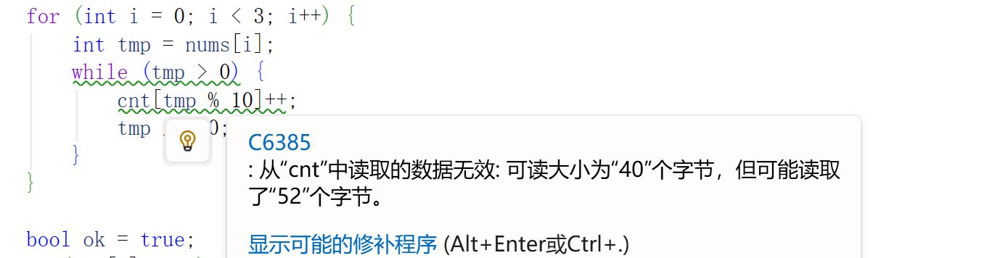
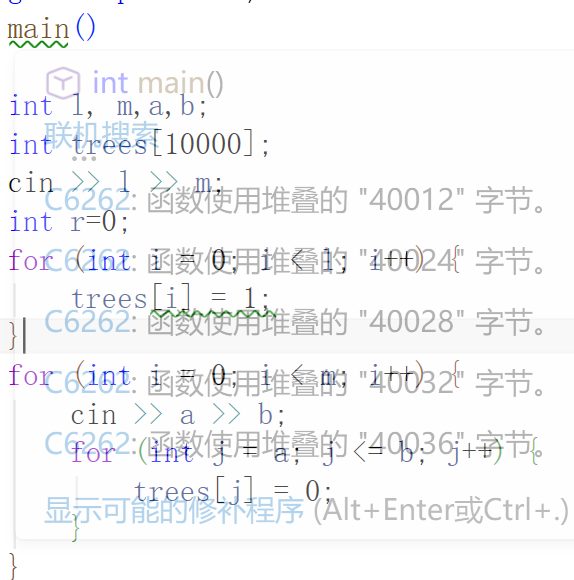
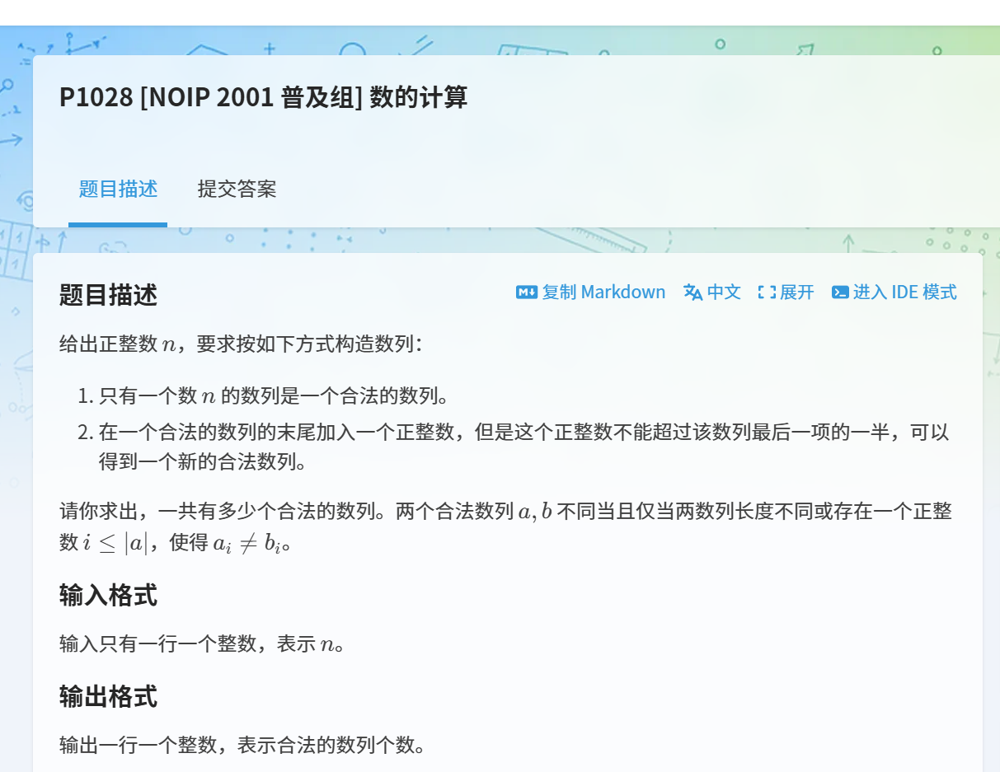
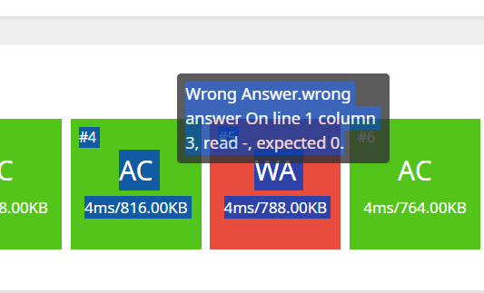

最近暑假闲的没事做，想要温习一下C语言，从ACM大佬那里得知了一个刷题网站洛谷。
搜到一个博客是关于洛谷题解的：洛谷编程题解指南-CSDN博客
因此本着学习的心态，记录一下自己觉得有意思的题目
因为是初学者，这里就光做入门的题目了，待到编程能力提高了一点再做做拔高的。
三连击（P1008） 这道题我刚开始做错的地方是没读懂题干
将1，2，…，9共9个数分成三组，分别组成三个三位数，且使这三个三位数构成1：2：3的比例，试求出所有满足条件的三个三位数。
首先我看到了比例，思路是用a代表那一份，然后用2*a和3*a分别代表另外两个数字
自然想到了只需要表示a即可。刚开始我还嵌套循环表示a，其实没那么复杂，一个从123开始的for循环就可以搞定
然后就是划定一下b和c的范围，不可以超过999.现在只剩下最后一个难关，怎么确保这些数字没有重复而且是1-9组成的
问了kimi，只需要初始化一个count[10]数组即可。写一个循环，配合这个数组用来计数，怎么提取每一位的数字呢，可以只看最后一位然后不断左移，就是%10和/10的循环罢了。然后就是需要保证没有0的存在，没有重复的数字
具体算法可以参考以下代码：
1 2 3 4 5 6 7 8 9 10 11 12 13 14 15 16 17 18 19 20 21 22 23 24 25 26 27 28 29 30 31 32 33 34 #include <iostream> #include <stdio.h> #pragma warning (disable:6385) using namespace std ; int main () { for (int a = 123 ; a <= 987 ; a++) { int b = a * 2 ; int c = a * 3 ; if (b > 999 || c > 999 ) continue ; int cnt[10 ] = { 0 }; int nums[3 ] = { a, b, c }; for (int i = 0 ; i < 3 ; i++) { int tmp = nums[i]; while (tmp > 0 ) { cnt[tmp % 10 ]++; tmp /= 10 ; } } bool ok = true ; if (cnt[0 ] == 1 ) ok = false ; for (int i = 1 ; i < 10 ; i++) { if (cnt[i] != 1 ) ok = false ; } if (ok) { cout << a << " " << b << " " << c << endl ; } } return 0 ; }
因为我这里编译器提示越界，实则并没有越界，加了一个警告提示符

这里说明下，洛谷P1980题目思路和这个题目有相同之处，所以这个计数方法可以留意一下。
小鱼的航程（P1424） 题目描述就不写了，就是说这只fish每周六日都会休息，其他时间都是每天前进250米。
这道题之所以记录是因为我觉得我的思路很不错
因为星期几都是固定的，取余可以很好的完成这个任务
所以一个if就可以轻松判断是否是工作日：
1 2 3 4 5 6 7 8 9 10 11 12 13 14 15 16 17 18 19 20 #include <iostream> #include <stdio.h> using namespace std ; int main () { int x ; long n; cin >> x >> n; int miles = 0 ; for (int i = 0 ; i < n; i++) { if (!(x % 7 == 6 || x%7 ==0 )) { miles += 250 ; } x++; } cout << miles; return 0 ; }
校门外的树（洛谷-P1047） 题目描述：
某校大门外长度为L的马路上有一排树，每两棵相邻的树之间的间隔都是1米。我们可以把马路看成一个数轴，马路的一端在数轴0的位置，另一端在L的位置；数轴上的每个整数点，即0，1，2，……，L，都种有一棵树。
由于马路上有一些区域要用来建地铁。这些区域用它们在数轴上的起始点和终止点表示。已知任一区域的起始点和终止点的坐标都是整数，区域之间可能有重合的部分。现在要把这些区域中的树（包括区域端点处的两棵树）移走。你的任务是计算将这些树都移走后，马路上还有多少棵树。
通过这个题目了解到一个新知识：

当提示这个信息的时候，是因为C/C++ 里写在函数内部直接定义的数组 / 大变量 ，是放在栈（stack） 里的：
Windows VS 默认程序栈大小一般只有 1MB（约 1024×1024=1048576 字节）
虽然 10000 个 int (40KB) 没到上限，但 VS 静态检查会提前告警：局部数组太大，不推荐放栈上 ；
所以我们把这个写在main函数外部就不会有问题了
某校大门外长度为 l 的马路上有一排树，每两棵相邻的树之间的间隔都是 1 米。我们可以把马路看成一个数轴，马路的一端在数轴 0 的位置，另一端在 l 的位置；数轴上的每个整数点，即 0,1,2,…,l ，都种有一棵树。
由于马路上有一些区域要用来建地铁。这些区域用它们在数轴上的起始点和终止点表示。已知任一区域的起始点和终止点的坐标都是整数，区域之间可能有重合的部分。现在要把这些区域中的树（包括区域端点处的两棵树）移走。你的任务是计算将这些树都移走后，马路上还有多少棵树。
根据题目描述长度为L，因为起点是0，所以数组长度没有弄好，长度是L的话应该是一共有L+1颗树的
下面是我的代码：
1 2 3 4 5 6 7 8 9 10 11 12 13 14 15 16 17 18 19 20 21 22 23 24 25 26 27 #include <iostream> #include <stdio.h> using namespace std ; int trees[10000 ];int main () { int l, m,a,b; cin >> l >> m; int r=0 ; for (int i = 0 ; i <= l; i++) { trees[i] = 1 ; } for (int i = 0 ; i < m; i++) { cin >> a >> b; for (int j = a; j <= b; j++) { trees[j] = 0 ; } } for (int i = 0 ; i <= l; i++) { if (trees[i] == 0 ) { r++; } } cout << l+1 -r; return 0 ; }
统计单词数（洛谷-P1308） 我这里因为暂时不会KMP算法，因此就采取暴力一点的方式统计单词数量了
题目描述：
给定一个单词，请你输出它在给定的文章中出现的次数和第一次出现的位置。注意：匹配单词时，不区分大小写，但要求完全匹配，即给定单词必须与文章
中的某一独立单词在不区分大小写的情况下完全相同（参见样例1 ），如果给定单词仅是文章中某一单词的一部分则不算匹配（参见样例2 ）。
第一思路就是首先得利用空格分隔出来单词，形成单词列表后通过数组的形式进行匹配。
第二思路是因为单词必须得保证是大小写忽略，因此我们先转换单词为全是小写吧，这一步可以在单词数组初始化的时候进行。
这里需要格外注意，C语言字符串的结尾是\x00，所以第二步的时候不要忘记加上
这是我的刚开始的想法，后来对答案的时候发现和标准答案还是有很大的差别的。而且对for循环我的理解肯定比不过标准答案。具体来说就是，for循环初始化那一部分可以写上希望在循环开始的时候执行一次的代码，相应的循环变量处理的时候可以写每次循环结束后希望执行的代码。
按照我的思路来说还是比较麻烦，还得单独写一个变量存储单词首字母的出现位置，这个时机我觉得在单词转换的时候就不错，转换单词的时候直接写入首字母的位置到一个和单词数组配套的数组即可
1 2 3 4 5 6 7 8 9 10 11 12 13 14 15 16 17 18 19 20 21 22 23 24 25 26 27 28 29 30 31 32 33 34 35 36 37 38 39 40 41 42 43 44 45 46 47 48 49 50 51 52 #include <iostream> #include <cstring> using namespace std ; char input[10000005 ];char a[1005 ];char c[500005 ][105 ]; int start_pos[500005 ];int main () { cin >> a; cin .ignore(100000 , '\n' ); cin .getline(input, sizeof (input)); int len = strlen (input); int a_len = strlen (a); for (int i = 0 ; i < a_len; i++) a[i] = tolower (a[i]); int word_count = 0 ; int pos = 0 ; int word_start = 0 ; for (int i = 0 ; i <= len; i++) { if (input[i] == ' ' || input[i] == '\0' ) { if (pos > 0 ) { c[word_count][pos] = '\0' ; start_pos[word_count] = word_start; word_count++; pos = 0 ; } } else { if (pos == 0 ) word_start = i; c[word_count][pos++] = tolower (input[i]); } } int index = -1 , flags = 0 ; for (int i = 0 ; i < word_count; i++) { if (strcmp (c[i], a) == 0 ) { if (index == -1 ) index = start_pos[i]; flags++; } } if (flags) cout << flags << " " << index; else cout << "-1" ; return 0 ; }
按照大佬的思路，比较的时候无非是在单词刚开始的时候进行比较，所以我们也没必要非要转换为数组，反而浪费时间。不如直接抓住这时候前一位是一个空格，然后进行逐个比较即可。至于首字母的时机，在比较前直接赋值就行了，正如刚才说的for循环理解就是应用到了这个地方
附上大佬代码：
1 2 3 4 5 6 7 8 9 10 11 12 13 14 15 16 17 18 19 20 21 22 23 24 25 26 27 28 29 30 31 32 33 34 35 36 37 38 39 40 41 #include <iostream> #include <cstring> #include <cstdio> using namespace std ; int main () { char confirm[11 ],article[1000001 ]; int i,j,total=0 ,flag=0 ,work=-1 ; gets(confirm); gets(article); for (i=0 ;confirm[i]!='\0' ;i++) if (confirm[i]>'A' &&confirm[i]<'Z' ) confirm[i]=char (confirm[i]+32 ); for (i=0 ;article[i]!='\0' ;i++) if (article[i]>'A' &&article[i]<'Z' ) article[i]=char (article[i]+32 ); for (i=0 ;article[i]!='\0' ;i++) { if ((i==0 ||article[i-1 ]==' ' )&&(confirm[0 ]==article[i])) { for (flag=i,j=0 ;confirm[j]!='\0' ;j++,i++) if (confirm[j]!=article[i]) break ; if (strlen (confirm)==j&&(article[i]==' ' ||article[i]=='\0' )) { total++; if (total==1 ) work=flag; } } } if (total>0 ) cout <<total<<" " <<work<<endl ; else cout <<work<<endl ; return 0 ; }
小书童——密码（洛谷-P1914） 实际上这道题就是实现了一次凯撒加密。凯撒加密移位算法在数学里面能用mod 26表示，这也是一样，因此还算稍微简单的算法
1 2 3 4 5 6 7 8 9 10 11 12 13 14 15 16 #include <iostream> #include <cstring> using namespace std ; int main () { char password[1000000 ]; int offset; cin >> offset; cin >> password; for (int i = 0 ; i < strlen (password); i++) { password[i] = 97 + (password[i] + offset - 97 ) % 26 ; } cout << password; return 0 ; }
这道题为社么想要记录是因为和大佬思路不一样，我是想直接寻找到偏移量再加上’a’，大佬思路是想一步到位，通过原来的字母直接加上对应的偏移得到新字母，所以按照后者的做法需要单独写一个判断来校验是否超过了’z’。我感觉我的这个思路还算是比较简洁。做逆向题的时候经常见
数字反转（升级版）（洛谷-P1553） 这道题真的没有一点头绪
询问了chatGPT。他给了一个需要用到一些库函数的做法：
1 2 3 4 5 6 7 8 9 10 11 12 13 14 15 16 17 18 19 20 21 22 23 24 25 26 27 28 29 30 31 32 33 34 35 36 37 38 39 40 41 42 43 44 45 46 47 48 49 50 51 52 53 54 55 56 57 58 59 60 61 62 63 64 65 66 67 68 69 70 71 72 73 74 75 76 77 78 79 80 81 82 83 84 85 #include <iostream> #include <vector> #include <algorithm> using namespace std ; using namespace std ; string rev (string s) { reverse(s.begin(), s.end()); int i = 0 ; while (s[i] == '0' && i < s.size() - 1 ) { i++; } return s.substr(i); } int main () { string s; cin >> s; if (s.back() == '%' ) { string a = s.substr(0 ,s.size() - 1 ); cout << rev(a) << "%" ; } else if (s.find('/' ) != string ::npos) { int p = s.find('/' ); string a = s.substr(0 , p); string b = s.substr(p + 1 ); cout << rev(a) << "/" << rev(b); } else if (s.find('.' ) != string ::npos) { int p = s.find('.' ); string a = s.substr(0 , p); string b = s.substr(p + 1 ); a = rev(a); reverse(b.begin(), b.end()); bool allzero = true ; for (char c : b) { if (c != '0' ) { allzero = false ; break ; } } if (allzero) { b = "0" ; } else { while (b.back() == '0' ) b.pop_back(); } cout << a << "." << b; } else { cout << rev(s); } return 0 ; }
大佬的做法又是让我想不到的一次。上面的做法很显然作弊了，用了太多的库函数
这个主要没想到的地方是如何分类，大佬做法简单粗暴：就是单独搞一个flag当作符号位，到时候根据符号位前还是后反转即可。但是不想做就是因为自己没有在玩下一步想，特殊点就是多了一个符号，根据符号在哪里进行进一步思考就可以。
对于这种反转的题，无非就是倒着写一个for循环。复杂的地方在于需要写几个条件分支而已。
1 2 3 4 5 6 7 8 9 10 11 12 13 14 15 16 17 18 19 20 21 22 23 24 25 26 27 28 29 30 31 32 33 34 35 36 37 38 39 40 41 42 43 44 45 46 47 48 49 50 51 52 53 54 55 56 57 58 59 60 61 62 63 64 65 66 67 68 69 70 71 72 73 74 75 76 77 78 79 80 81 82 83 84 85 86 87 88 89 90 91 92 93 94 95 96 97 98 99 100 101 102 103 104 105 106 107 108 109 110 111 112 113 114 115 116 117 118 119 120 121 122 123 124 125 126 127 128 129 130 131 132 133 134 135 136 137 138 139 140 141 142 143 144 145 146 147 148 149 150 151 152 153 154 155 156 157 158 159 160 161 162 163 164 165 166 167 168 169 170 171 172 173 174 175 176 177 178 179 180 181 182 183 184 185 186 187 188 189 190 191 192 193 194 195 196 197 198 199 200 201 202 203 204 205 206 207 208 209 210 211 212 213 214 215 #include <iostream> #include <cstring> using namespace std ; int main () { char num[100000 ] = {0 }; char result[100000 ] = {0 }; cin >> num; int len = strlen (num); int index = len; char flag = 0 ; int i; for (i = 0 ; i < len; i++) { if (num[i]=='.' || num[i]=='/' || num[i]=='%' ) { flag = num[i]; index = i; break ; } } if (index == len) { for (i=0 ;i<len;i++) { result[i]=num[len-i-1 ]; } int start=0 ; while (start<len-1 && result[start]=='0' ) { start++; } for (i=start;i<len;i++) { cout <<result[i]; } } else if (flag=='.' ) { for (i=0 ;i<index;i++) { result[i]=num[index-i-1 ]; } result[index]='.' ; for (i=index+1 ;i<len;i++) { result[i]=num[len-i+index]; } int start=0 ; while (start<index-1 && result[start]=='0' ) { start++; } int end=len-1 ; while (end>index+1 && result[end]=='0' ) { end--; } result[end+1 ]='\0' ; for (i=start;result[i]!='\0' ;i++) { cout <<result[i]; } } else if (flag=='/' ) { for (i=0 ;i<index;i++) { result[i]=num[index-i-1 ]; } result[index]='/' ; for (i=index+1 ;i<len;i++) { result[i]=num[len-i+index]; } result[len]='\0' ; int start=0 ; while (start<index-1 && result[start]=='0' ) { start++; } for (i=start;i<=index;i++) { cout <<result[i]; } start=index+1 ; while (start<len-1 && result[start]=='0' ) { start++; } for (i=start;i<len;i++) { cout <<result[i]; } } else if (flag=='%' ) { for (i=0 ;i<index;i++) { result[i]=num[index-i-1 ]; } int start=0 ; while (start<index-1 && result[start]=='0' ) { start++; } for (i=start;i<index;i++) { cout <<result[i]; } cout <<'%' ; } return 0 ; }
用一句毛主席的诗说就是自信人生二百年，会当水击三千里。
回文质数(P1217) 这里打算用递归实现这个算法，听说递归很耗时间，这里只是作为锻炼编程能力。原代码是通过循环构造回文数并且判断是否都是质数来实现的
1 2 3 4 5 6 7 8 9 10 11 12 13 14 15 16 17 18 19 20 21 22 23 24 25 26 27 28 29 30 31 32 33 34 35 36 37 38 39 40 41 #include <iostream> using namespace std ; int getLen (int n) { if (n < 10 ) return 1 ; return 1 + getLen(n / 10 ); } bool isPalindrome (int num) { if (num < 0 ) return false ; if (num < 10 ) return true ; int len = getLen(num); int high = num / (int )pow (10 , len - 1 ); int low = num % 10 ; if (high != low) return false ; int next = (num % (int )pow (10 , len - 1 )) / 10 ; return isPalindrome(next); } int main () { int x; cin >> x; if (isPalindrome(x)) cout << "是回文数" ; else cout << "不是回文数" ; return 0 ; }
我这个代码没有考虑是素数的情况
数的计算（P2001） 这个题直接让我失去了思路，根本找不到相关的表达式了

最后看了ChatGPT的回答，了解到估计是找到一个递推关系
假设f(n)表示以n开头的数列构造后满足条件的个数，比如f(6)，第二个数字可以是3，【6，3】本身是一个数列，排除这种情况，那么f(6)可以拆成1+f(3)。6后面同样可以跟1，2，3.因此这就是一个递归函数，f(6)到f(3)就是n/2的改变而已，据此写出递归函数
只要用递归就会提示[TLE]也就是时间超出限制。所以我们需要加上递归的记忆，啥意思呢？只需要加一个数组，减少大量重复计算即可，就像下面这样。
1 2 3 4 5 6 7 8 9 10 11 12 13 14 15 16 17 18 19 20 21 22 23 24 25 26 27 28 29 30 31 32 33 34 35 36 37 38 39 40 #include <iostream> using namespace std ; long long dp[100005 ];long long solve (int i) { if (dp[i]) return dp[i]; long long a=1 ; for (int j=1 ;j<=i/2 ;j++) { a+=solve(j); } dp[i]=a; return a; } int main () { int n; cin >>n; cout <<solve(n); return 0 ; }
问了大佬，说这种前一步操作影响下一步的题就是动态规划或递归的思路。
火柴棒等式（洛谷-P1149） 这道题真的是没有一点点思路
问了chatGPT。我们其实抓住关键一点：已知条件是火柴棒的每个数字的条数，分析一个等式成立的条件，肯定是火柴棒数量能对上。我们编程里面需要一个条件，这就是一个筛选条件，然后枚举即可。
数字分别需要这些根火柴棒：number[10]={6,2,5,5,4,5,6,3,7,6}
我们还需要4根拼接成+和=符号。据此写出脚本筛选即可。
而且题目这句话可以视为一个简单的提示：如果 A \=B ，则 A +B =C 与 B +A =C 视为不同的等式（A ,B ,C ≥0）就是让我们大胆枚举
1 2 3 4 5 6 7 8 9 10 11 12 13 14 15 16 17 18 19 20 21 22 23 24 25 26 27 28 #include <iostream> using namespace std ; int sum (int i) { int r; int number[10 ] = { 6 ,2 ,5 ,5 ,4 ,5 ,6 ,3 ,7 ,6 }; if (i / 10 > 0 ) { r = number[i % 10 ] + sum(i / 10 ); } else { r = number[i % 10 ]; } return r; } int main () { int n, r=0 ; cin >> n; for (int i = 0 ; i < 999 ; i++) { for (int j = 0 ; j < 999 ; j++) { if (sum(i) + sum(j) + sum(i + j)+4 == n) { r++; } } } cout << r; }
数字反转（洛谷-P1307） 这里主要记载另一种数字反转的思路：
1 2 3 4 5 6 while (n!=0 ) { sum=sum*10 +(n%10 ); n/=10 ; }
P2089 烤鸡 刚开始没想到枚举的思路，小看电脑算力了
看有人用搜索算法，我还没学到，只能说是留着以后填坑巴
1 2 3 4 5 6 7 8 9 10 11 12 13 14 15 16 17 18 19 20 21 22 23 24 25 26 27 28 29 30 31 32 33 34 35 36 37 38 39 40 41 42 43 44 45 46 47 48 49 50 51 52 53 #include <iostream> using namespace std ; int main () { int n, sum = 0 ; int ing1, ing2, ing3, ing4, ing5, ing6, ing7, ing8, ing9, ing10; cin >> n; for (ing1 = 1 ; ing1 <= 3 ; ing1++) for (ing2 = 1 ; ing2 <= 3 ; ing2++) for (ing3 = 1 ; ing3 <= 3 ; ing3++) for (ing4 = 1 ; ing4 <= 3 ; ing4++) for (ing5 = 1 ; ing5 <= 3 ; ing5++) for (ing6 = 1 ; ing6 <= 3 ; ing6++) for (ing7 = 1 ; ing7 <= 3 ; ing7++) for (ing8 = 1 ; ing8 <= 3 ; ing8++) for (ing9 = 1 ; ing9 <= 3 ; ing9++) for (ing10 = 1 ; ing10 <= 3 ; ing10++) if (ing1 + ing2 + ing3 + ing4 + ing5 + ing6 + ing7 + ing8 + ing9 + ing10 == n) sum++; cout << sum << endl ; for (ing1 = 1 ; ing1 <= 3 ; ing1++) for (ing2 = 1 ; ing2 <= 3 ; ing2++) for (ing3 = 1 ; ing3 <= 3 ; ing3++) for (ing4 = 1 ; ing4 <= 3 ; ing4++) for (ing5 = 1 ; ing5 <= 3 ; ing5++) for (ing6 = 1 ; ing6 <= 3 ; ing6++) for (ing7 = 1 ; ing7 <= 3 ; ing7++) for (ing8 = 1 ; ing8 <= 3 ; ing8++) for (ing9 = 1 ; ing9 <= 3 ; ing9++) for (ing10 = 1 ; ing10 <= 3 ; ing10++) { if (ing1 + ing2 + ing3 + ing4 + ing5 + ing6 + ing7 + ing8 + ing9 + ing10 == n) { cout << ing1 << " " ; cout << ing2 << " " ; cout << ing3 << " " ; cout << ing4 << " " ; cout << ing5 << " " ; cout << ing6 << " " ; cout << ing7 << " " ; cout << ing8 << " " ; cout << ing9 << " " ; cout << ing10 << " " ; cout << endl ; } } return 0 ; }
计算器的改良（洛谷-P1022） 通过这道题认识一种编程思想：
以后写代码时，如果发现：
1 2 3 4 if(...) else if(...) else if(...) else if(...)
越来越长，而且每个条件都在考虑“之前发生了什么”。
通常说明：
缺少一个状态变量。
应该把：
保存下来。
这是我废了老大劲写的第一版没有AC：
1 2 3 4 5 6 7 8 9 10 11 12 13 14 15 16 17 18 19 20 21 22 23 24 25 26 27 28 29 30 31 32 33 34 35 36 37 38 39 40 41 42 43 44 45 46 47 48 49 50 51 #include <iostream> #include <ctype.h> #include <cstring> using namespace std ; int main () { int num = 0 , alpha = 0 , c=0 ; int work = 1 ; double r; char x; int flag = 1 ; char a[100 ]; cin >> a; for (int i = 0 ; i < strlen (a); i++) { if (isdigit (a[i])) { num = num * 10 + (a[i] - '0' ); } else if (isalpha (a[i])) { x = a[i]; if (num == 0 ) { num = 1 ; } alpha += work * flag * num; num = 0 ; flag = 1 ; } else if (a[i] == '=' ) { c += flag * work * num; work = -1 ; flag = 1 ; num = 0 ; } else { c += work * flag * num; num = 0 ; flag = 1 ; if (a[i] == '-' ) { flag = -1 ; } } } c += num * flag * work; r = -c / (double )alpha; cout << x << "=" ; printf ("%.3f" , r); return 0 ; }
主要在第五个测试点出问题了“

最后经过很多测试数据测试发现问题在这里：
我代码没有考虑x前面系数本身为0.因此需要新的状态变量存储字母前面有没有其他的数字。
而且需要注意-0和+0评判的系统会不认。所以需要特殊处理：
1 2 3 4 5 6 7 8 9 10 11 12 13 14 15 16 17 18 19 20 21 22 23 24 25 26 27 28 29 30 31 32 33 34 35 36 37 38 39 40 41 42 43 44 45 46 47 48 49 50 51 52 53 54 55 56 57 58 59 60 61 62 63 64 65 66 67 68 69 #include <iostream> #include <ctype.h> #include <cstring> using namespace std ; int main () { int num = 0 , alpha = 0 , c = 0 ; bool hasNum = false ; int work = 1 ; double r; char x; int flag = 1 ; char a[100 ]; cin >> a; for (int i = 0 ; i < strlen (a); i++) { if (isdigit (a[i])) { num = num * 10 + (a[i] - '0' ); hasNum = true ; } else if (isalpha (a[i])) { x = a[i]; if (hasNum) { alpha += work * flag * num; } else { alpha += work * flag; } num = 0 ; flag = 1 ; hasNum = false ; } else if (a[i] == '=' ) { c += flag * work * num; work = -1 ; flag = 1 ; num = 0 ; hasNum = false ; } else { c += work * flag * num; num = 0 ; hasNum = false ; flag = 1 ; if (a[i] == '-' ) { flag = -1 ; } } } c += num * flag * work; r = -c / (double )alpha; if (!r) { cout << x << "=" ; printf ("0.000" ); } else { cout << x << "=" ; printf ("%.3f" , r); } return 0 ; }
P1036 [NOIP 2002 普及组] 选数 看大佬的博客是用到了深度优先算法，这里不太会这个算法，想想有没有别的思路
但是如果用我的这个思路，素数选择就必须用数论知识进行缩短用埃式筛，这样才能实现不TLE
具体思路是：每个数字只有俩状态，选到或者没选到。因此可以用二进制来表示每个数字
比如，1234随机选1个，是不是可以刚好用0001，0010，0100，1000来表示
这里让我搞不清的就是怎么确定1的数量。后来还是想到了状态机的思路。那就是只需要有1的时候让计数器变量+1即可。
有思路了，先实现选数字，素数的筛选一会再说。
1 2 3 4 5 6 7 8 9 10 11 12 13 14 15 16 17 18 19 20 21 22 23 24 25 26 27 28 29 30 int main () { int n, k,r=0 ; int a[20 ]; cin >> n; cin >> k; int cnk=0 ,sum=0 ; init(); for (int i = 0 ; i < n; i++) { cin >> a[i]; } for (int i = 0 ; i < (1 << n); i++) { sum = 0 ; cnk = 0 ; for (int j = 0 ; j < n; j++) { if ((i & (1 << j)) > 0 ) { cnk++; sum += a[j]; } } if (cnk == k&&prime[sum]) { r++; } } cout << r; return 0 ; }
再来看看素数筛选：要找出 2~n 之间所有质数 ：
先默认全部数字都是质数；
从最小质数 2 开始，把它所有倍数全部标记为非质数 ；
找到下一个没被标记的数，它就是新质数，再标记它所有倍数；
循环直到遍历到 根号n，剩余未标记的数全部是质数。
1 2 3 4 5 6 7 8 9 10 11 12 13 14 15 16 17 18 19 20 21 bool prime[100000005 ];void init () { for (int i = 2 ; i <= 100000000 ; i++) prime[i] = true ; for (int i = 2 ; i * i <= 100000000 ; i++) { if (prime[i]) { for (int j = i * i; j <= 100000000 ; j += i) { prime[j] = false ; } } } }
这里需要注意int prime[100000005];占用空间小，int prime[100000005] = { 1 };占用空间很大。后者可能会导致编译错误
为了进一步缩减空间，int也应该换成bool表示。